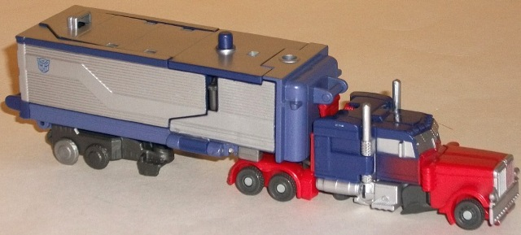
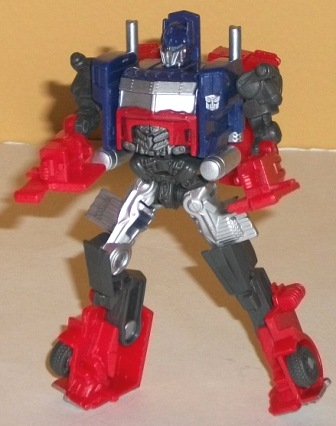
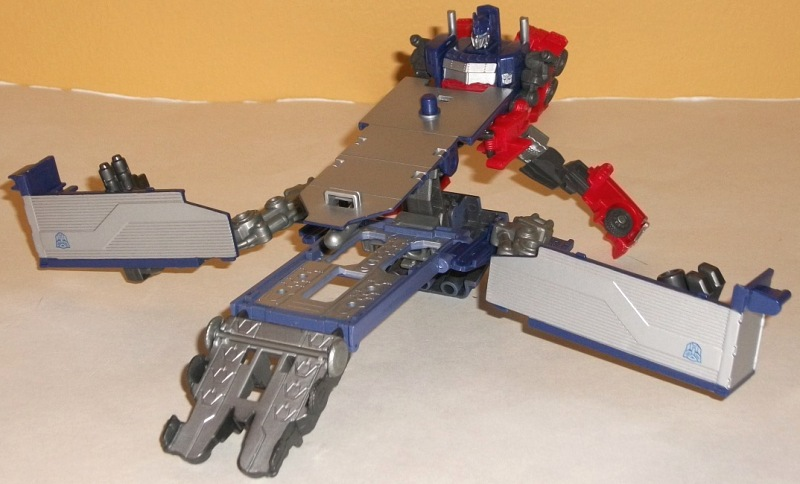
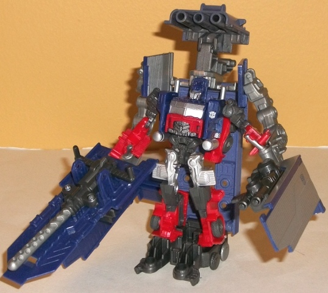

Allegiance
: Autobot
Size
: Cyberverse Vehicle Set
Difficulty of Transformation of Robot
:
Easy
Difficulty of Transformation of Base:
Medium
Color Scheme
: Dull pale blue, silver,
dark periwinkle, moderately light red, moderately dark bluish gray, and
some light sky blue and light metallic gunmetal gray
Figure Rating
: 8.3
Base Rating
: 3.9
(NOTE: Because this set is partially a repaint, this is not a full-blown review. This mainly covers any changes made to the mold and the color scheme, and merely compares it to the original DotM Commander class Optimus Prime. For a review on the mold itself, read the review of the original DotM Commander class Optimus Prime here .)


The core Optimus Prime
figure for this set is a redeco of the solo release of the toy. Though
still mostly movie accurate, this one foregoes a completely movie-accurate
color scheme in favor of a slightly lighter color scheme, with both the
blue and the red being noticeably lighter shades than on the original.
There also aren't any flame paint apps-- beyond those pieces painted silver
like the face, smokestacks, front grill, and windows, the paint apps are
actually a little more barren and plain on this version, with a simple
"spray" paint app helping to fade from the blue to the red near the nose
of the truck. The weapons that came with the original release of this figure
are also gone, replaced by the trailer-base set instead.


Speaking of the trailer-base,
this is the new part of the set, so this will get a more in-depth review.
In "vehicle mode" it's a simple trailer that connects (quite sturdily)
to the Optimus Prime truck cab toy via a clip point near the front. The
trailer definitely hearkens back in its general design and boxy look in
this mode to Prime's
G1 trailer
, complete with
the angled line running along the side. Other than that and a couple of
connector points for the other modes, this mode is pretty much just a featureless
box, with surprisingly little mold detailing visible here-- but also no
real extras, which sort of balance each other out, in my opinion.
The base mode for the
toy carries on the unfortunate standard of many small Transformer bases
in that it looks rather random. There's a ramp and "docking bay" for Cyberverse-sized
vehicles, but that's about the only really identifiable part of the base
here. The pieces used for the hands in the "robot armor" mode are simply
supposed to hang off the sides here, with parts of the truck shell forming
a shield of sorts to help make it not QUITE so obvious that they're arms--
though this attempt fails quite spectacularly. A large part of the top
of the truck mode can also fire a spring-loaded missile on its underside,
giving this mode a little firepower, even if it's a bit inelegant. There's
also handles on the back end for a Cyberverse-scaled figure to "man" the
turret, if you so desire (the turret itself can only move up and down,
however, not side-to-side). The mold detailing is considerably improved
here in this mode, with lots of little pistons, hinges, and the like molded
into the arms, launcher, and ramp-- even the back side of the trailer shell
pieces have a bit of "panel and rivet" detailing on them, which is a welcome
change compared to the trailer mode.
The base can also form
"power-up" armor for Prime to give him a sort of super robot mode, though
in terms of looks it's hardly super. The biggest problem with this mode
are the connections; they aren't very solid. Optimus simply holds onto
his large arm extentions via handles, and his feet are supposed to clip
into the larger lower immovable "feet" of the super robot mode-- unfortunately,
the connections only really clip onto one side of the regular robot feet,
and thus don't hold particularly well, either, which leaves Optimus looking
like a bit of a mess in this mode. The arms' movement is also rather restrictive
at the shoulders due to the joint type and the transformation (they can
pretty much only move forward and back, with pretty much no side-to-side
movement). The trailer shells also hang pretty blatantly off his super
robot forearms, with no real attempt to conceal them. On the plus side,
the point of movement below the hands is pretty unrestricted (though that's
the only other major point of movement in this mode), and the pegs in his
super mode hands can hold his missile launcher from base mode pretty solidly.
The "missile pack" details above his head are a nice touch, as well.
As a whole, though the core figure of Optimus Prime is quite good, if you're going to skip any Cyberverse Vehicle Set from the line it should be this one. The trailer mode of the base set looks pretty good (if a bit overly plain), but the base and super robot modes are, quite simply, bad in nearly all respects, looking very haphazard and not remotely solid. Add that the Optimus Prime toy also has the least-interesting color scheme of all the releases of this mold, and this is an easy skip except for Cyberverse completists. Even though it's considerably more expensive, if you really want a "Super Mode" flying Optimus from this line go for one of the non-Cyberverse-scaled versions instead.
Review by Beastbot